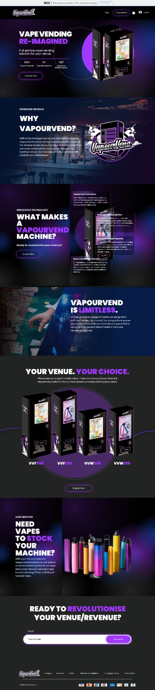

Ecommerce
VapourVend
The challenge
Make a broad product range easier to browse.
Key decisions
- Strengthen product discovery.
- Keep categories consistent.
- Make purchase actions predictable.
The improved journey
Shoppers can move through the range with less choice overload.